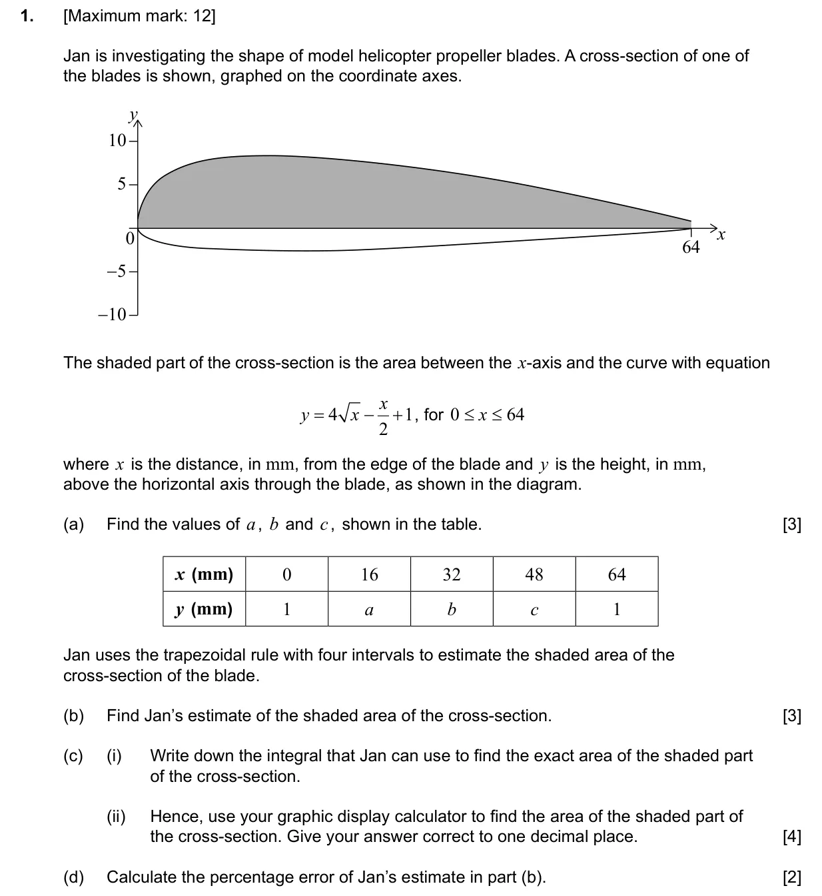
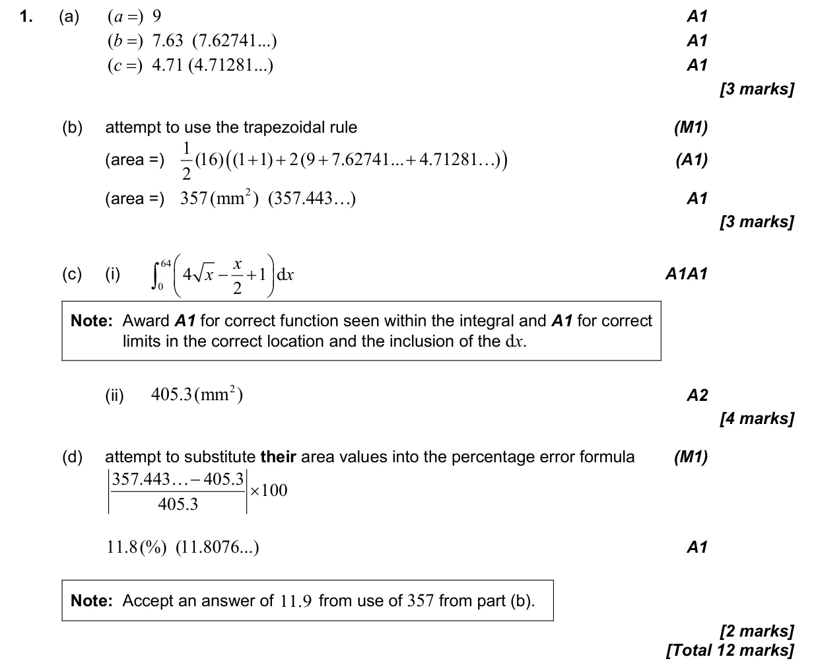

5.8 Approximating areas with the trapezoidal rule5.5 Integration introduction, areas between curve and x-axis1.6 Approximation, bounds, percentage error and estimation
Question

Markscheme

12 marks - Nov P2 TZ1 - Mathematics: Applications and Interpretation SL

